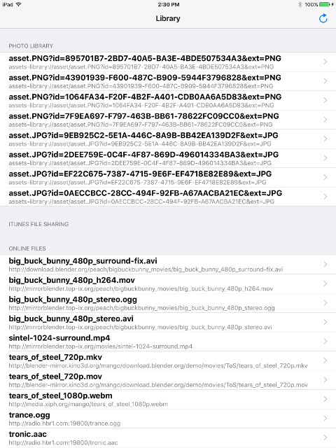
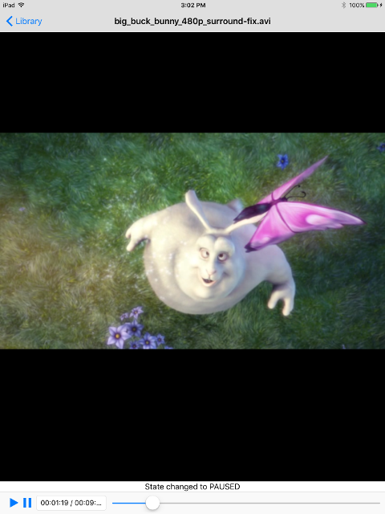

iOS tutorial 5: A Complete media player
Goal
 
This tutorial wants to be the “demo application” that showcases what can be done with GStreamer on the iOS platform.
It is intended to be built and run, rather than analyzed for its pedagogical value, since it adds very little GStreamer knowledge over what has already been shown in iOS tutorial 4: A basic media player.
It demonstrates the main functionality that a conventional media player has, but it is not a complete application yet, therefore it has not been uploaded to the AppStore.
Introduction
The previous tutorial already implemented a basic media player. This one simply adds a few finishing touches. In particular, it adds the capability to choose the media to play, and disables the screensaver during media playback.
These are not features directly related to GStreamer, and are therefore outside the scope of these tutorials. Only a few implementation pointers are given here.
Selecting the media to play
A new UIView has been added, derived from UITableViewController
which shows a list of clips. When one is selected, the
VideoViewController from iOS tutorial 4: A basic media player appears
and its URI property is set to the URI of the selected clip.
The list of clips is populated from three sources: Media from the device’s Photo library, Media from the application’s Documents folder (accessible through iTunes file sharing) and a list of hardcoded Internet addresses, selected to showcase different container and codec formats, and a couple of bogus ones, to illustrate error reporting.
Preventing the screen from turning off
While watching a movie, there is typically no user activity. After a
short period of such inactivity, iOS will dim the screen, and then turn
it off completely. To prevent this, the idleTimerDisabled property of
the UIApplication class is used. The application sets it to YES
(screen locking disabled) when the Play button is pressed, so the screen
is never turned off, and sets it back to NO when the Pause button is
pressed.
Conclusion
This finishes the series of iOS tutorials. Each one of the preceding tutorials has evolved on top of the previous one, showing how to implement a particular set of features, and concluding in this Tutorial
- The goal of Tutorial 5 is to build a complete media player which can already be used to showcase the integration of GStreamer and iOS.
It has been a pleasure having you here, and see you soon!
The results of the search are